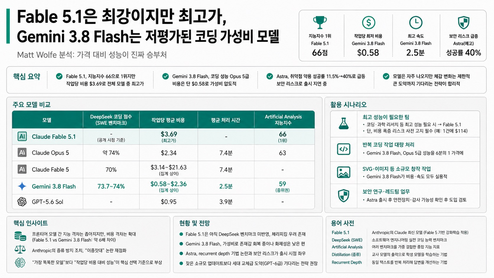

Matt Wolfe가 이번 주 쏟아진 Anthropic·Google·OpenAI 신모델을 뜯어본 결과, 진짜 주목할 건 가격 대비 성능이었다.

01핵심 개요
Claude Fable 5.1, Artificial Analysis 지능지수 66으로 현존 최고(직전 1위 Opus 5는 63)
그러나 작업당 비용 $3.69로 전체 모델 중 최고가, "5보다 25% 저렴" 주장과 실측 데이터 상충
Gemini 3.8 Flash, DeepSeek 코딩 벤치마크 73.7~74%로 Opus 5와 동급, 비용은 작업당 단 $0.58
OpenAI Astra는 취약점 악용 성공률 11.5%→40%로 급등, 출시를 의도적으로 지연 중
Claude Code로 게임 클론 제작 시 Fable 5.1은 1시간30분·$114 이상 소요, Gemini는 압도적으로 저렴
02핵심 주장 / 논점 구조
Matt Wolfe의 중심 주장: "모델 출시 속도는 그대로인데 실제 삶의 변화는 크지 않다" — 대다수 일반 사용자 체감은 정체, 체감 변화는 주로 코딩·수학·과학 영역에 국한.
Fable 5.1은 콘텐츠 크리에이터들 사이에서 "게임체인저"로 과도하게 포장되고 있지만, 실사용 경제성 관점에서는 오히려 최악의 선택지에 가깝다는 반론.
Gemini 3.8 Flash는 Google이 오랫동안 화제성에서 밀려난 탓에 실제 성능 대비 언급량이 지나치게 적다는 "저평가" 프레임.
Astra의 벤치마크는 "더 적은 토큰으로 더 높은 성공률"이라는 효율성 향상이 곧 보안 리스크 증가로 직결된다는 이중적 함의를 지님.
저자는 개별 벤치마크 몇 % 개선에 그치는 잦은 모델 발표보다, 세대를 가르는 큰 도약(GPT-5→GPT-6급)까지 기다렸다 공개하는 편이 낫다고 결론.
03모델별 평가
Claude Fable 5.1: Anthropic이 선별 공개한 벤치마크에서 에이전틱 과학 연구 능력이 GPT-5.6 Sol 대비 거의 2배, 에이전틱 코딩·지식노동에서도 큰 폭 우위. 다만 이는 5.6 Sol이 상대적으로 약한 지표만 골라 비교한 "체리피킹"이라는 지적.
사이버보안 안전장치를 정밀화해 소프트웨어 취약점 식별에 활용 가능해졌고, 평균 개입(거부) 건수가 60% 감소. 단, 이중용도 사이버보안 작업 일부는 여전히 Opus 계열로 리다이렉트.
distillation(증류) 방지 장치 강화: 신규 API 계정은 다중 턴 대화에서 Claude의 이전 사고 과정(트랜스크립트)을 유지한 채 프롬프트를 편집할 수 없게 됨 — 중국발 모델들의 증류 의혹을 겨냥한 조치로 해석.
가격은 입력 $10 / 출력 $50 per million token으로 Fable 5와 동일 유지. Anthropic은 캐시 읽기 비용 절감으로 "전형적 워크로드 기준 25% 저렴"을 주장했으나, Artificial Analysis 실측으로는 작업당 $3.69(Fable 5는 $3.14)로 오히려 더 비쌈.
Gemini 3.8 Flash: DeepSeek(소프트웨어 엔지니어링 벤치마크) 73.7%(공식 사이트 기준 74%)로 Claude Opus 5와 동일 순위, Claude Fable 5(70%)를 상회. 평균 비용은 작업당 $2.36으로, Opus 5($11.84)·Fable 5($21.63) 대비 압도적으로 저렴.
Artificial Analysis 종합 지능지수는 59점(10위권)으로 중위권이지만, 코딩에 특화되어 최적화된 것으로 추정. 지식노동(GDPval) 등 비코딩 영역에서는 상위권 모델에 못 미침.
작업당 비용 $0.58, 평균 처리 시간 2.5분(Opus 5·Fable은 7.4분)으로 속도와 비용 모두 최상위권. 다만 출력 토큰 사용량은 가장 비효율적(추론에 시간을 많이 씀).
OpenAI Astra(예고): 아직 정식 출시 전이며 "Path to Astra" 공지를 통해 보안 위험성 때문에 출시를 의도적으로 지연 중이라 설명. "이 모델은 적절한 도구와 접근 권한이 있으면 사람의 단계별 지시 없이도 잘 보호된 시스템에서 알려지지 않은 보안 결함을 발견하고 악용 방법을 개발할 수 있는 최초의 모델"이라고 자체 등급 지정.
04전략적 의미
프론티어 모델 간 지능 격차는 좁혀지고 있지만, 비용 격차는 오히려 벌어지고 있다 — Fable 5.1과 Gemini 3.8 Flash의 작업당 비용 차이는 약 6배.
Anthropic의 증류 방지 조치는 "자사 모델은 인터넷 데이터로 학습했으면서 타사의 증류는 막는다"는 이중잣대 논쟁을 재점화시켰다.
OpenAI가 채택 중인 것으로 알려진 recurrent depth(looped transformer) 기법은 Chain of Thought 투명성 원칙과 충돌할 소지가 있어, 향후 AI 안전성 감사 체계 전반에 파급될 수 있는 이슈.
실사용자 관점에서는 "가장 똑똑한 모델"보다 "작업당 비용 대비 성능이 가장 좋은 모델"을 고르는 실용주의가 부상하고 있음을 시사.
05벤치마크 비교표
모델
DeepSeek 코딩 점수
작업당 평균 비용
평균 처리 시간
Artificial Analysis 지능지수
Claude Fable 5.1
미측정(공개 시점 기준)
$3.69
-
66 (1위)
Claude Opus 5
약 74%
$2.34
7.4분
63
Claude Fable 5
70%
$3.14~$21.63(집계 상이)
7.4분
-
Gemini 3.8 Flash
73.7~74%
$0.58~$2.36(집계 상이)
2.5분
59
GPT-5.6 Sol
-
$0.95
3.9분
-
06활용 시나리오
예산이 넉넉하고 코딩·과학 리서치에서 최고 성능이 필요한 팀 → Fable 5.1, 단 비용 폭증 리스크를 반드시 사전 고지(예: 게임 클론 1건에 $114 소요 사례).
반복적인 코딩 작업을 저비용·고속으로 대량 처리해야 하는 개발팀 → Gemini 3.8 Flash가 Opus 5급 성능을 6분의 1 가격에 제공.
SVG·이미지 생성처럼 소규모 크리에이티브 작업을 빠르게 테스트하고 싶은 사용자 → Gemini 3.8 Flash(9센트/1분32초)가 Fable 5.1(4.35달러/18분)보다 훨씬 실용적.
보안 연구·레드팀 성격의 취약점 탐지 업무를 다루는 조직 → Astra 출시 이후 안전장치와 감사 가능성(Chain of Thought 투명성)을 반드시 확인 후 도입 검토.
07현황 및 전망
Fable 5.1은 아직 DeepSeek 벤치마크에 정식 반영되지 않은 상태로, Anthropic이 발표한 벤치마크는 자사 유리 지표 위주로 선별 공개되었다는 점에 유의해야 함.
Google DeepMind는 Gemini 3.8 Flash로 코딩 가성비 시장에서 존재감을 회복하고 있으나, 화제성 측면에서는 Anthropic·OpenAI에 크게 못 미치는 상황.
OpenAI Astra는 "이번 주 또는 다음 주 출시" 추측이 나오는 가운데, recurrent depth 기법에 대한 과학계 우려가 출시 시점과 안전성 검증 범위에 영향을 줄 가능성.
Matt Wolfe는 향후 잦은 소규모 모델 업데이트보다 세대 교체급 발표를 기다리는 편이 낫다는 입장을 유지하며, 관련 후속 논의는 매주 금요일 뉴스 요약 영상에서 이어갈 예정.
08용어 사전
Fable 5.1: Anthropic이 이번 주 공개한 Claude 최신 모델. 기존 Fable 5 가중치에 추가 강화학습(post-training)을 적용한 버전.
DeepSeek(SWE 벤치마크): 소프트웨어 엔지니어링 실전 코딩 능력을 측정하는 벤치마크로, 실사용 코딩 체감과 상관관계가 높다고 평가됨.
Artificial Analysis: 여러 벤치마크를 가중 결합해 모델의 전반적 "지능" 순위를 산출하는 제3자 평가 지표.
Distillation(증류): 기존 대형 모델(교사)의 프롬프트·출력을 이용해 신규 모델(학생)을 학습시키는 기법. 중국발 모델의 증류 의혹이 논쟁이 됨.
Recurrent depth(looped transformer): 동일 텍스트를 여러 번 반복 처리해 답변을 개선하는 신기법. Chain of Thought를 사람이 읽기 어렵게 만든다는 우려가 제기됨.
Chain of Thought(사고 사슬): 모델이 최종 답을 내기 전 추론 과정을 텍스트로 드러내는 방식. 감사·안전성 점검의 핵심 수단으로 쓰임.